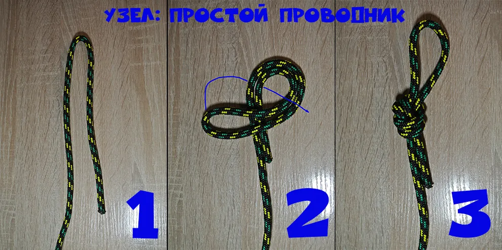

Simple loop knot
A basic loop tied in the middle or end of a rope to create a fixed attachment point — commonly used for a hammock ridgeline or suspension line. Quick to tie and uses very little rope, which makes it convenient for a knot you plan to leave in place for a long time. It can bind tight and become harder to untie after carrying a heavy load.
- Double the rope back on itself to form a loop.
- Tie an overhand knot with the doubled rope, leaving the loop hanging free at the end.
- Tighten evenly and check the loop is the size you need.
Step-by-step photo
